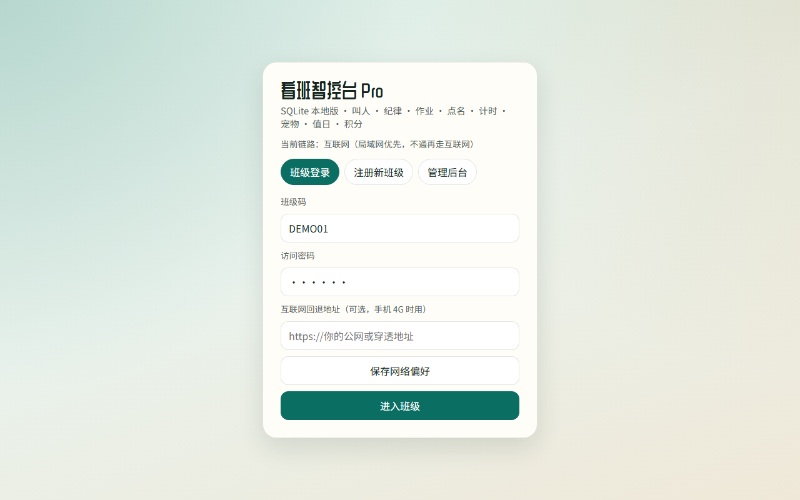
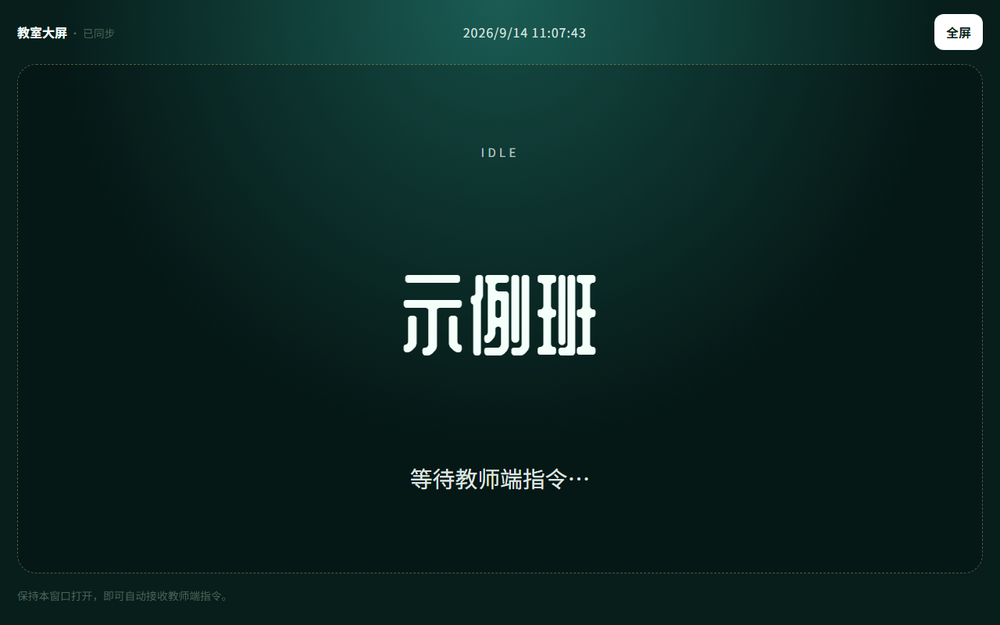
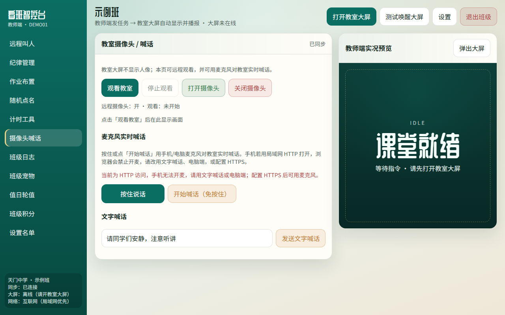
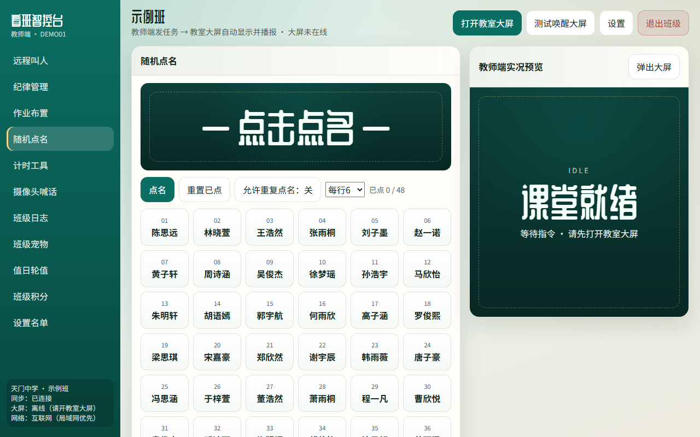
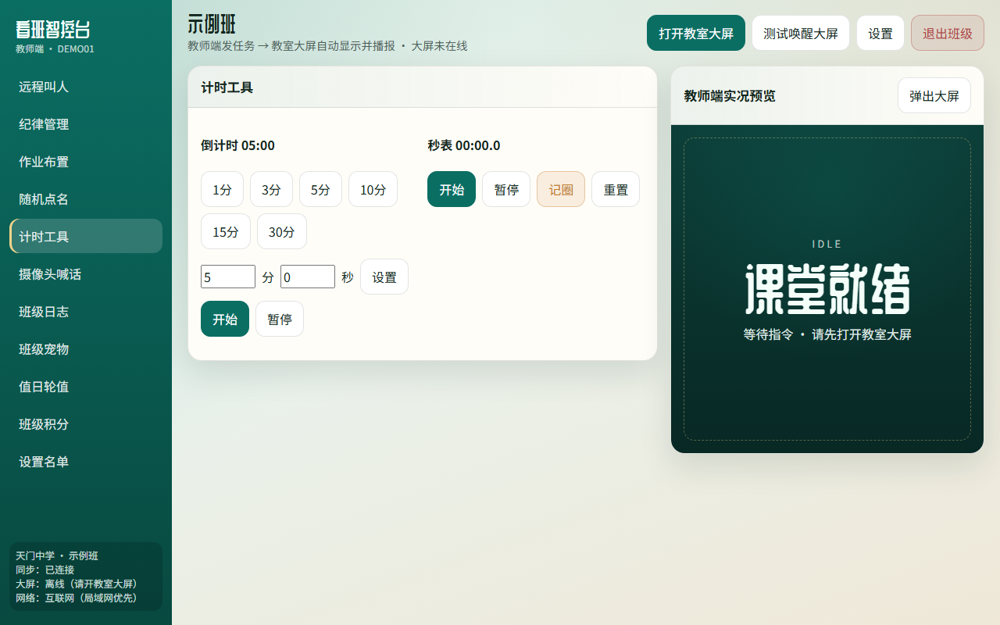
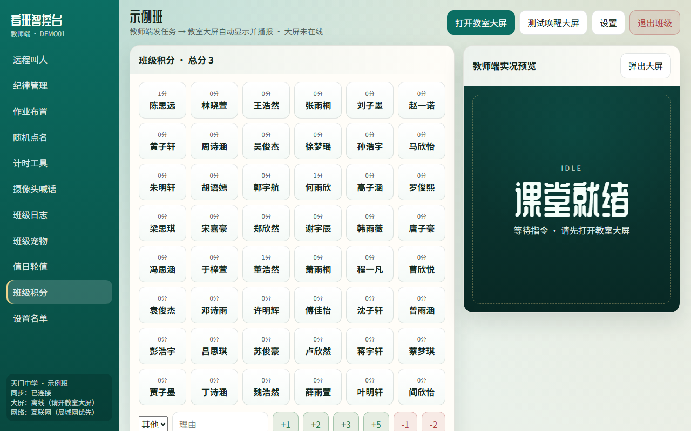
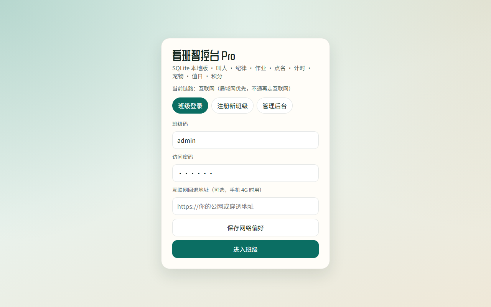

用WORKBUDDY手搓远程叫人+摄像头喊话：办公室里真能把班看住
上一篇讲了提示词怎么把「看班智控台 Pro」搓出来。这篇不谈方法论，只谈老师真正天天摸的两个按钮：远程叫人，以及摄像头喊话。
测试地址：http://test.zjjdg.top:5666/
演示：DEMO01 / 123456

先搞清两端
这系统不是“教师端自嗨页面”。
同一班级号进，WebSocket 一连上，你点的东西才会在大屏上炸开。侧栏底下能看见：同步是否连接、大屏在不在线、走的是局域网还是公网。

大屏离线时，预览区会老实写着 IDLE / 课堂就绪，并提示你去开教室大屏——别以为点了就一定传到教室，先看状态。

一、远程叫人：点名字，大屏替你喊
场景很土，但刚需：你在办公室改卷，班里某个学生要过来。以前靠班干部跑一趟，或者发消息指望有人看见。
现在：打开「远程叫人」，点学生卡片。

你可以：
{name}同学，请到办公室来一趟。大屏侧会显示名字 + 播报。多人时先报名字再报事由，语音走队列，避免说到一半被下一条打断——这是真用过才知道要修的细节，不是产品简介上的形容词。
手机端同样能叫：

使用小建议：
叫人模块解决的是「把人请出来」；下一节解决的是「人还在班里时，你怎么看见、怎么喊住」。
二、摄像头喊话：远程看班 + 开口管一下
侧栏进「摄像头喊话」。

这块分三层，别混：
1）看教室
状态区会写：远程摄像头开没开、观看开没开。没开大屏时，这里再厉害也是空的——还是那句话，先连上教室。
2）实时麦克风喊话
浏览器安全策略很烦：很多手机在纯 HTTP 下没有麦克风权限。页面上会提示走 HTTPS 或本机可信环境。这不是系统矫情，是浏览器规矩。部署到公网时，尽量给证书。
3）文字喊话
输入一句「请安静，认真听讲」之类，点发送。大屏出字，适合你不方便说话、或只想冷冰冰提醒一下的时候。

我自己用时的体感：
叫人是“点对点召回”；摄像头喊话是“远端值守”。午休、自习、你人在别的楼层时，看一眼有没有炸锅，比装十个监控 App 直接——至少班级维度、权限、和现有叫人/纪律是同一套登录。
三、其他功能（简写，知道有就行）
菜单上还有这些，上一篇提过，这里不展开：





管理后台另有入口，可看各班概况（管理员账号另设）。对普通任课老师，日常就教师端这十一二个按钮够用。

四、你现在就可以试的最短路径
DEMO01，密码 123456WorkBuddy 手搓的好处不是“一夜写出完美产品”，而是：你能按真实课堂把叫人话术、播报队列、摄像头权限这些恶心细节一轮轮补上。远程叫人和摄像头喊话，恰恰是补丁打得最多的两块——也是我愿意单独开一篇写的原因。
上一篇：通用提示词怎么把整系统迭代出来。
这篇：办公室里，怎么把人喊到、把班看住。
去点两下试试。不好用的地方，欢迎直接怼——这种系统，本来就该在骂声里变好用。